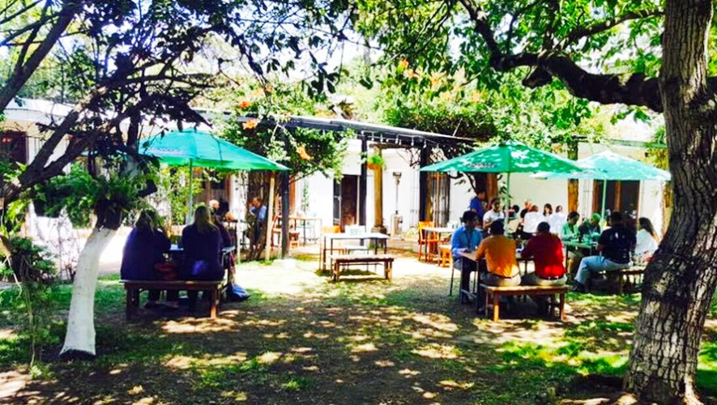
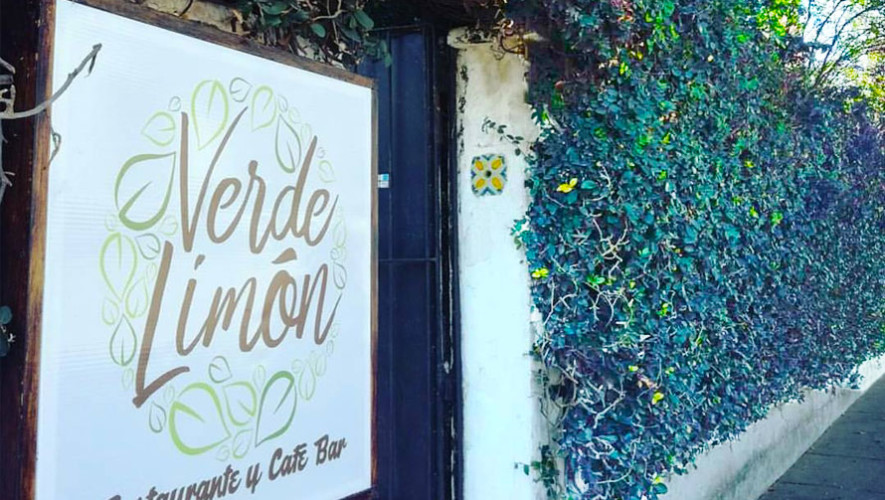

En pleno centro de la amatitlan existe un rincón lleno de naturaleza con mesas al aire libre. Verde Limón es un restaurante de comida variada que vende productos frescos en un ambiente relajante y diferente. Este es el sitio ideal para visitar con tus amigos y alejarte de la rutina, con muy buena comida y son amigables con los animales. ¡Genial!


Restaurante Verde Limón posee una variedad de platillos acoplados a los gustos diferentes de cada consumidor que se disfrutan al aire libre: pizza, mariscos, hamburguesas, carnes a la parrilla, bar y café, comida saludable y vegetariana, entre otros.